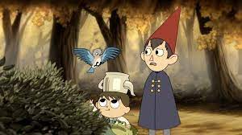
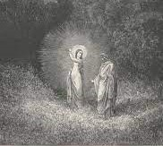
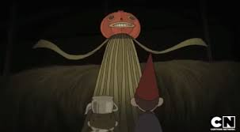
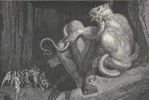
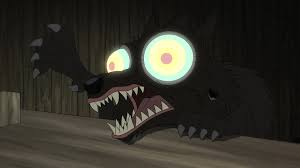
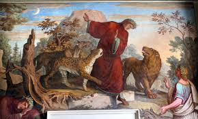
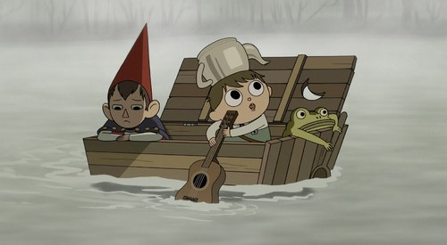
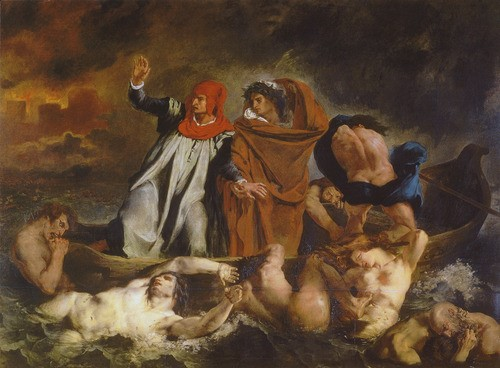

| OTGW Character | Dante's Inferno Character | Character Description |
|---|---|---|
|  |  |
Beatrice from Over the Garden Wall mirror's Dante's lover, Beatrice, in Dante's Inferno |
|  |  |
Enoch from Over the Garden Wall has been compared to Minos |
|  |  |
The dog that attacks Wirt and Greg when they "enter" the Unknown is similar to the animals that attack Dante upon entering Hell |
|  |  |
Wirt and Greg are Dante and Virgil
|